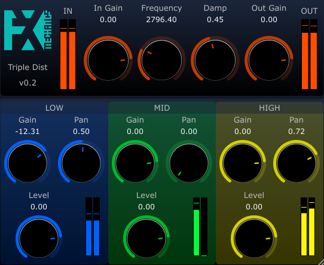

About
FX-Mechanics
Audio plugins

StrinGO is a virtual instrument based on coupled waveguide models. These waveguides can be excited by four kinds of exciters: an external input, a basic waveform oscillator, a white noise and a crackling sound generator.
More info on Github page

MoTo (Monitoring Tool) is an effect tool that aims to be placed after the master track in daw in order to mimic harwarde monitoring controlers. It allows to select betwen four stereo outputs, has mute/dim/solo buttons. It was designed to with Reaper in mind be should be also useful in other daws.
More info on Github page
{kind=link}
BiRR3D (Binaura Room Reverb 3D) is a parallelepipedic room acoustic simulator. The dimensions (x,y,z) of the room can be adjusted, as well as the source and listener positions.
More info on Github page
{kind=link}
BiRR2D (Binaura Room Reverb 2D) is the 2D equivalent of BiRR3D. It allows faster computations of the impulse response. Eventually, longer reverberavtions can be calcultated, but then the convolution computation is more CPU intensive. Take care !
More info on Github page

More info on Github page
{kind=link}
Filter/distorsion plugin. The signal is separated into three frequency bands (low, mid, high) thanks to a state variable filter. Each band is then distorded and panned separately, and then signal are mmixed. This creates interesting spatialization effects when cutoff frequency is varied.
More info on Github page

PiWheeG (Pitch Wheel Gate) is a midi effect plugin that fixes a problem that occurs with some hardware midi keyboards whose pitch wheel doesn't go back to zero.
More info on Github page
Downloads
Contact